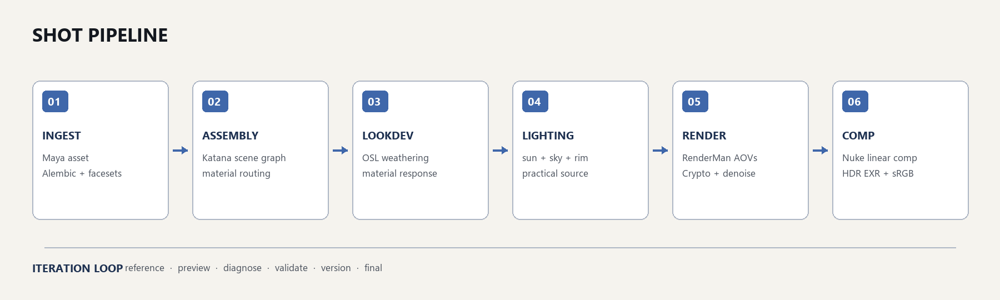
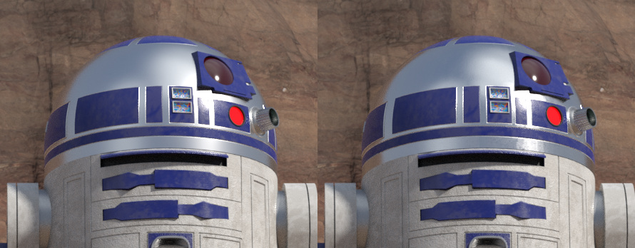
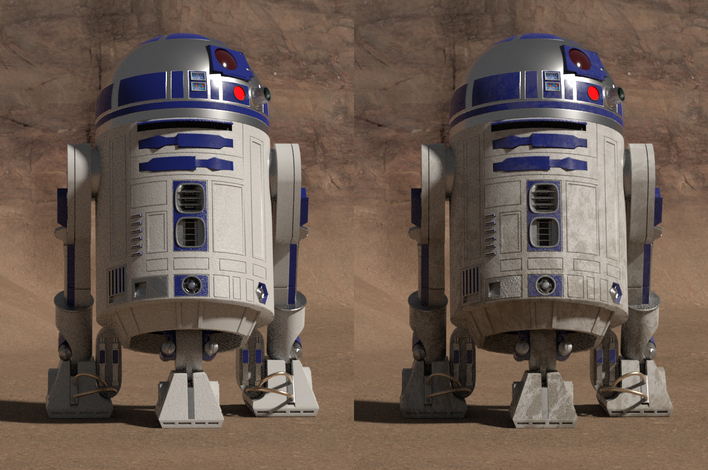
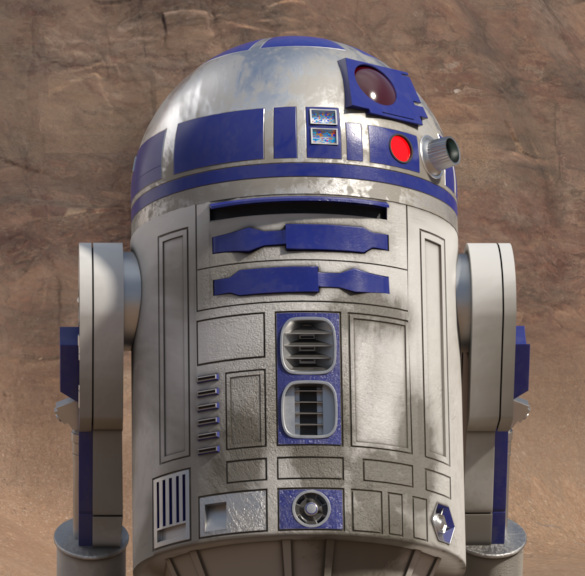
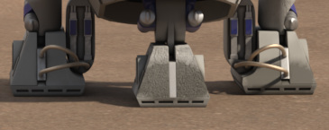
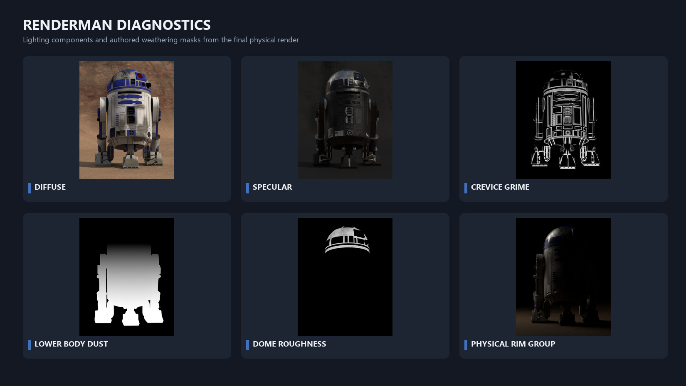
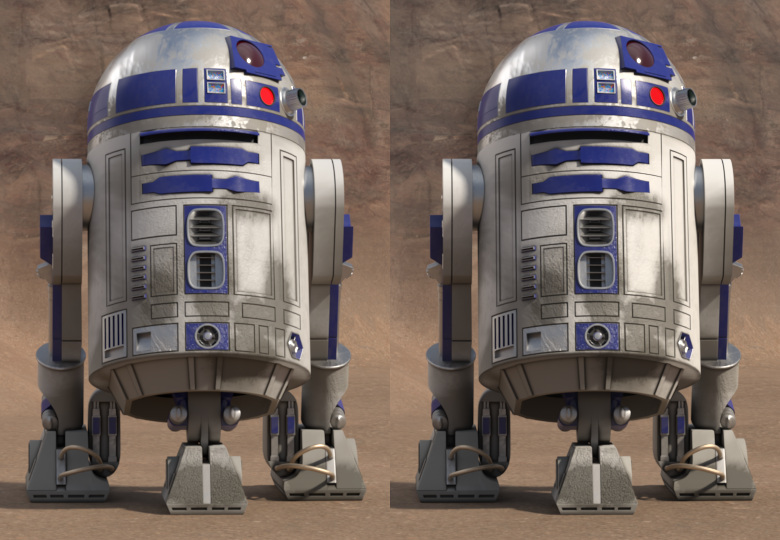

01 / LIGHTING TD · LOOK DEVELOPMENT
R2-D2 Desert Look Development & Lighting.
A complete shot workflow from Maya and Alembic ingestion through Katana assembly, RenderMan look development and lighting, multilayer delivery and a controlled Nuke finish.
Personal, noncommercial Lighting TD study · 1920 × 816 · 2.35:1 · 60 mm camera

/ BREAKDOWN
From lighting components to final integration.
The breakdown reveals how the environment, lighting states, material response and finishing stages build the final desert shot.
/ THE BRIEF
Make the character belong to the environment.
The existing asset initially read as too clean and separate from the canyon. I kept the camera and broad composition stable while rebuilding material response, adding localized desert weathering and shaping a motivated sun-and-sky lighting setup.
I solved the image in the physical render first. Nuke was used for measured integration, depth, practical-light bloom and film response rather than redesigning the lighting. I did not model the R2-D2 asset.
/ SHOT PIPELINE
A traceable path from asset to final frame.
Each stage was versioned and validated so creative iterations remained reproducible and failures could be traced without altering approved source data.

/ LOOK DEVELOPMENT
Material response before surface decoration.
I mapped 72 facesets and 112 mesh placements into coherent material families, then developed worn aluminium, painted surfaces, mechanical metals, lenses and environment materials. Custom OSL controls keep dust and grime tied to form, height and recesses.

MATERIAL RESPONSE
Worn aluminium dome
Broad reflections, fine roughness breakup and controlled highlights preserve the blue panels and metallic identity.

PROCEDURAL WEATHERING
Clean versus desert exposure
Layered masks add seam dirt, lower-body accumulation and localized staining while retaining clean areas and colour identity.

NATIVE CROP
Upper-body review
A dedicated high-resolution crop for judging reflections, panel roughness, localized dirt, red emission and rim placement.

CONTACT
Grounded silhouette
The immediate area beneath the feet is protected from terrain displacement to keep contact stable.
/ LIGHTING
Motivated desert light with controlled separation.
A broad desert sun with a 4.6-degree source creates readable, softened shadow edges. Cool and neutral sky information remains visible in the shadow-side paint, while the ground and canyon return warm bounce into the character.
The physical rim contribution was strengthened by 35 percent for the final pass and kept in its own light-group AOV. The small red indicator remains an emissive practical with restrained local interaction.
/ RENDER & DIAGNOSTICS
The image stays inspectable.

Render and EXR specifications
- RenderMan
- 1920 × 816 · pixel variance 0.012 · 12 to 128 samples
- Denoising
- gen2_sym with variance, albedo, normal, normal variance and sample-count guides
- AOV package
- Beauty, diffuse, specular, emission, shadow, depth, normal, position, light groups and environment regions
- Mattes
- Object and material Cryptomatte plus dedicated procedural weathering masks
/ NUKE FINISH
A measured finish that supports the render.
The versioned Nuke graph handles subject and environment balance, material response, depth, localized practical bloom, film response and output review. Cryptomatte keeps those decisions isolated and reversible.

MATCHED VIEW
RenderMan beauty versus Nuke finish
The comp introduces restrained depth, localized bloom and film response while preserving the material and lighting decisions of the physical render.
Automation & validation
- Python inspected Alembic hierarchy, facesets, UVs, material placements and texture inputs before scene changes.
- Build, render and validation remained separate operations with versioned Katana scenes, backups and frozen shader directories.
- Automation handled Katana parameter updates, OSL compilation, RenderMan invocation, AOV packaging and staged Nuke graph generation.
- Final checks preserved source hashes, EXR alpha, AOV pixel data, Cryptomatte IDs, HDR values and a single sRGB display transform.
Credits & disclosure
This is a personal, noncommercial portfolio study. The R2-D2 model was an existing asset; my contribution begins with scene ingestion and covers the environment integration, look development, procedural weathering, lighting, rendering, compositing and pipeline automation described above.
R2-D2 and Star Wars are properties of Lucasfilm Ltd. Third-party texture resources remain subject to their original licenses.